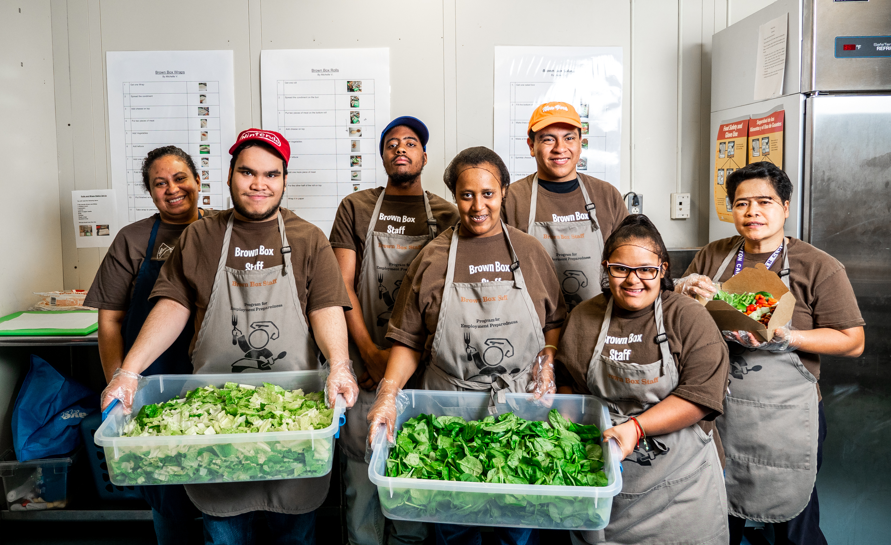

Brown Box Lunch prepares made-to-order sandwiches, wraps, and salads on Tuesdays and Thursdays weekly. School staff can fill out an order form and custom design the lunch of their choice. Sandwiches and wraps are served with a chips and a cookie; salads come with a cookie only. Make sure to check out the weekly special, which rotates weekly.
Our Mission
PEP is a community based program for supported work experience, supported travel training, and independent living training. One of the many goals of PEP is to empower our young adults with self-advocacy through self-determination. Students learn independent living and work readiness skills within community settings, and all skills are tailored to meet individual student needs. PEP partners with local businesses to help teach work and social skills within the business setting. These internships experiences provide an opportunity for students to demonstrate their talents. Two days a week, when students are at the Career Center for a full day, teachers engage students in direct instruction in the domains of personal finance, technology skills, resume writing, interview skills, guest speakers, and a variety of community outings. PEP students encourage to pursue enrichment experiences in a variety of ways, such as community/adult learning courses and/or Career and Technical Education (CTE) classes.
How do I place my order?
Order forms can be found in the main office by the mailboxes, or outside the Brown Box kitchen (near the cafeteria) on Tuesdays and Thursdays. Soon, customers will also be able to fill out a Google form online!